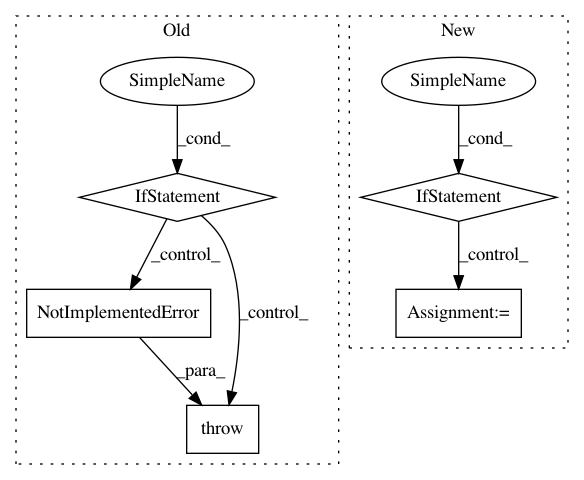

3e530f0fb84ba99e7cb6e84cc3547f1e1e5f01eb,coremltools/converters/nnssa/coreml/ssa_converter.py,SSAConverter,convert,#SSAConverter#,342
Before Change
for idx, node_name in enumerate(instruction_order):
node = func.graph[node_name]
op_type = node.op
if op_type not in self.CONVERT_FUNCTION_MAP:
raise NotImplementedError(
"[SSAConverter] Op type "{}" not implemented.".format(op_type))
if builtins.is_tensor(node.datatype):
print(
"[SSAConverter] [{}/{}] Converting op "{}" of type "{}", output shape: {}".format(
idx + 1, len(instruction_order), node_name, op_type, node.datatype.get_shape()))
After Change
op_type = node.op
custom_conversion_name = None
if node_name in self.custom_conversion_functions:
custom_conversion_name = node_name
elif op_type in self.custom_conversion_functions:
custom_conversion_name = op_type
// conversion_message to indicate how this function is being converted
conversion_message = ""
if custom_conversion_name is not None:
conversion_message = " with custom conversion function"
elif op_type in self.CONVERT_FUNCTION_MAP:
In pattern: SUPERPATTERN
Frequency: 3
Non-data size: 5
Instances
Project Name: apple/coremltools
Commit Name: 3e530f0fb84ba99e7cb6e84cc3547f1e1e5f01eb
Time: 2019-09-27
Author: bsonawane@apple.com
File Name: coremltools/converters/nnssa/coreml/ssa_converter.py
Class Name: SSAConverter
Method Name: convert
Project Name: apple/coremltools
Commit Name: 43656e4ec4052c705ac28b675bd151cba0c344a9
Time: 2019-10-04
Author: yuduo@apple.com
File Name: coremltools/converters/nnssa/coreml/ssa_converter.py
Class Name: SSAConverter
Method Name: _convert_batch_to_space_nd
Project Name: apple/coremltools
Commit Name: d8f1240c733c32c117b89fc14a6653f93b84f551
Time: 2019-12-19
Author: yuduo@apple.com
File Name: coremltools/converters/nnssa/coreml/ssa_converter.py
Class Name: SSAConverter
Method Name: _convert_conv2d